Quiet when cool.
Loud only when hot.
Pick Auto, Cool, or Max right in the panel. The thermometer shows the CPU heat. For Cool, draw your own curve: fan speed for each temperature.

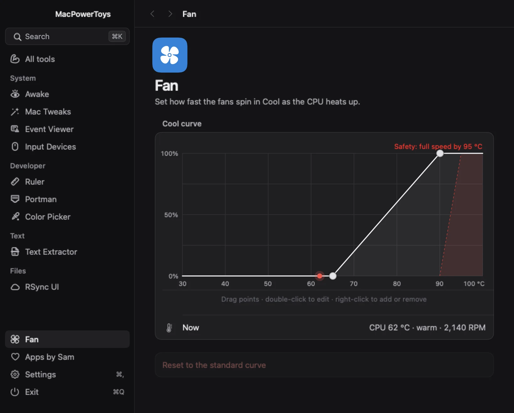
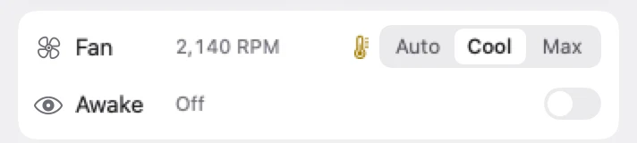
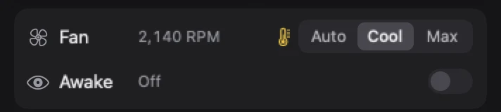
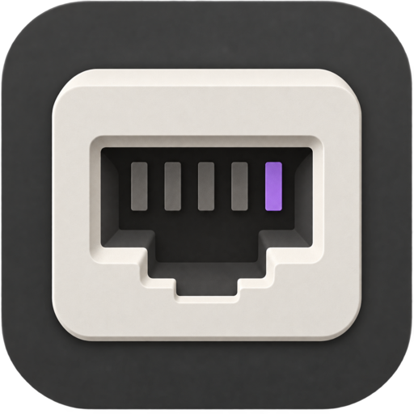
PortmanEvery dev server, found.
Every remote port, one click.
Portman watches the ports your dev servers open, shows what each one uses, and forwards ports from your SSH hosts. Here is how to set it up.

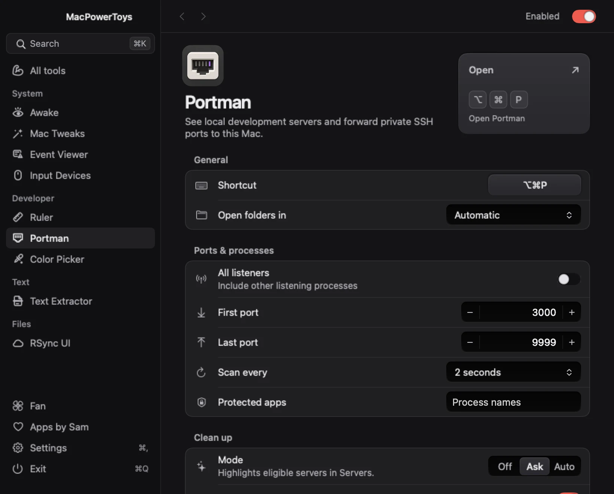
Turn it on.
Open MacPowerToys, pick Portman, and switch it on. Set the ports it watches, then open it any time with ⌥⌘P.
See every server.
Each server shows its project, git branch, uptime, and memory. The ring adds them all up.

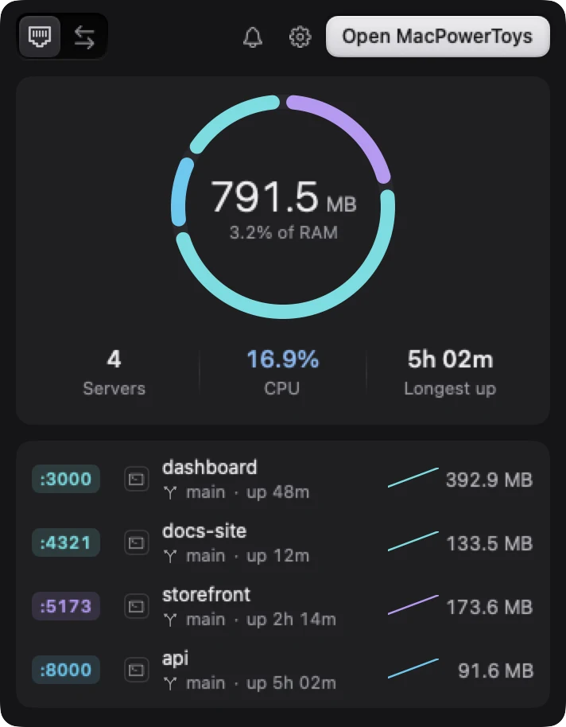
Open one to check it.
Live memory and CPU graphs. Restart or stop it, open it in your editor, or copy its URL.

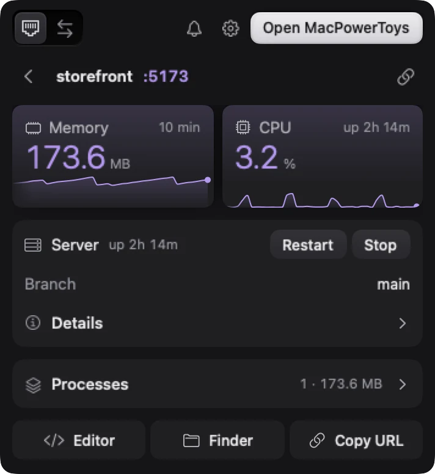
Forward a port over SSH.
Pick a host from your SSH config, scan it, and add a port. It opens here as localhost.

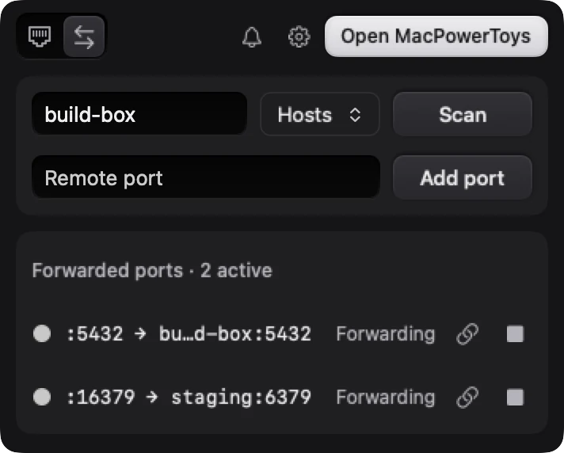
Copies keep going
while you work.
Send files to Google Drive, B2, S3, and 70 more through rclone. Pause, resume, or retry a copy right from the menu bar.
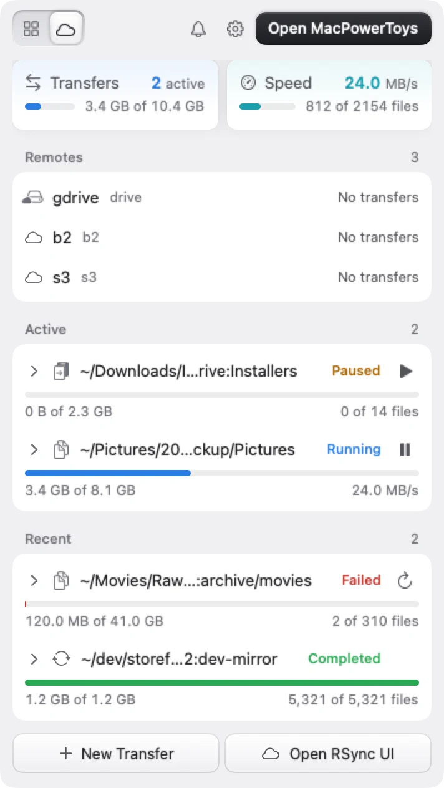
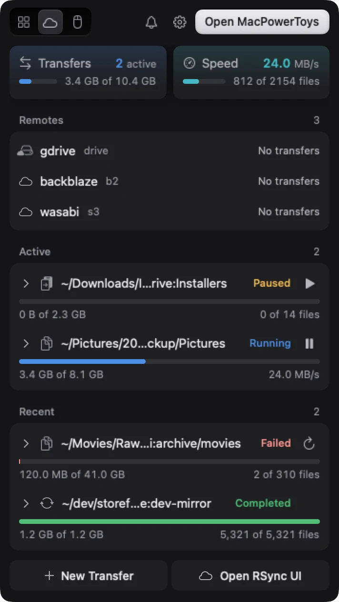

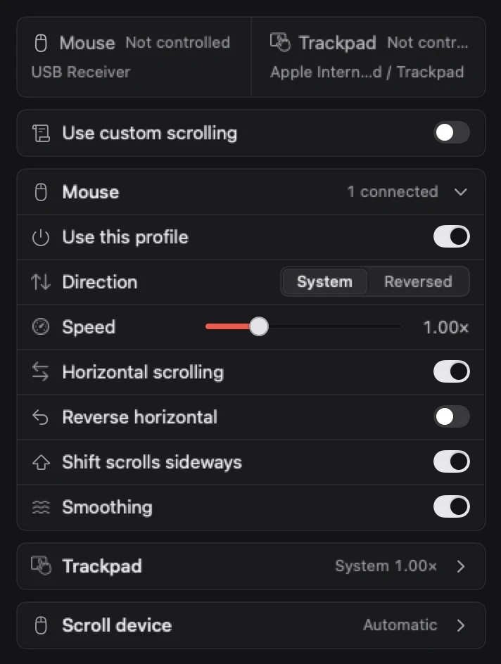
Hidden macOS settings,
with a reset.
Change settings that have no switch in System Settings, such as the Dock reveal delay. Every row has a Default choice.

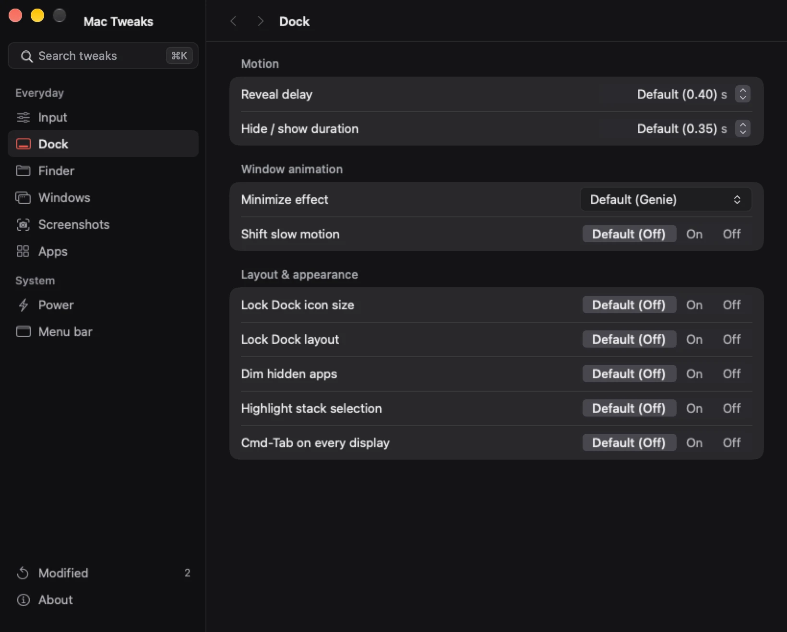
Small tools you will
reach for every day.
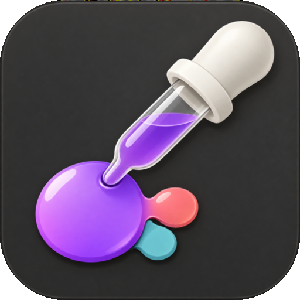
Color PickerAny pixel, nine formats.
HEX, RGB, HSL, CSS variable, SwiftUI, and NSColor. Pin colors and keep them in projects.
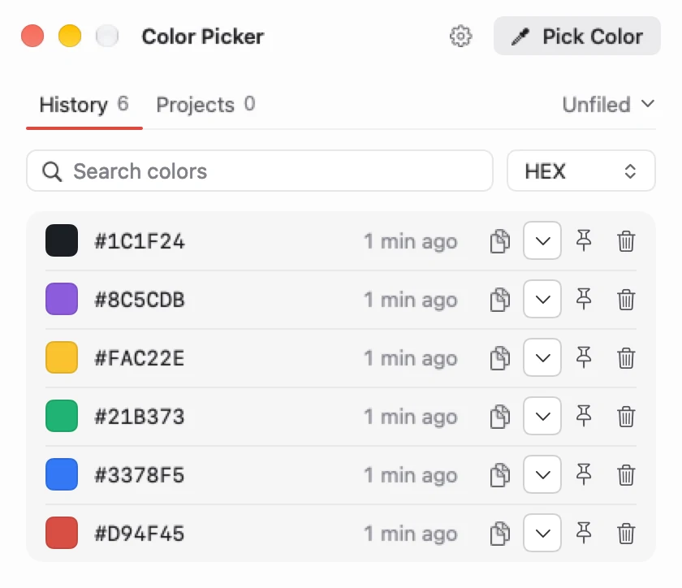
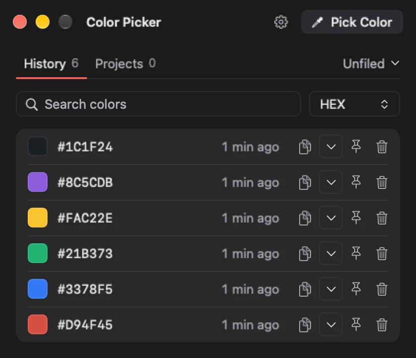
Copy text from anything.
Draw a box over an image, a video, or an error dialog. The text goes to your clipboard.
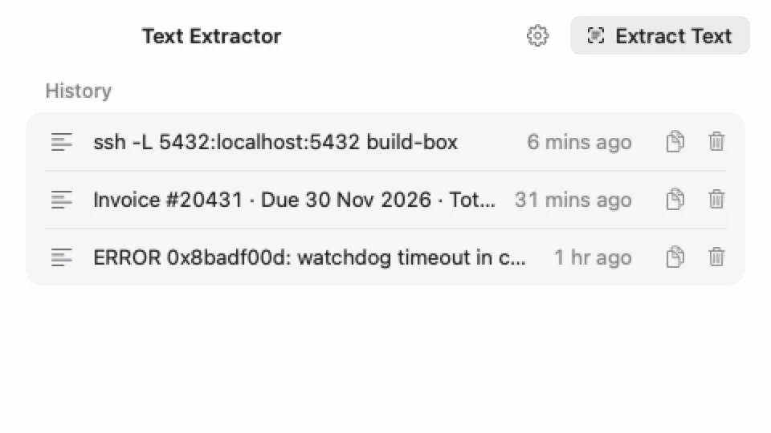
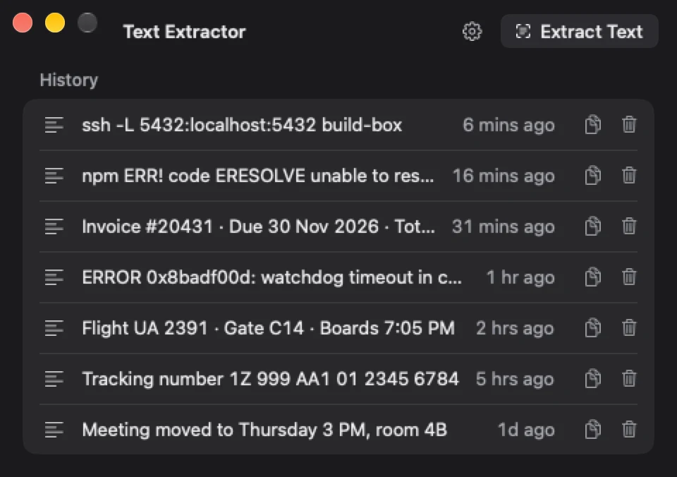
Stay awake on your terms.
Keep the Mac awake for 30 minutes, until 6 PM, or forever. Or set it to sleep after a timer.

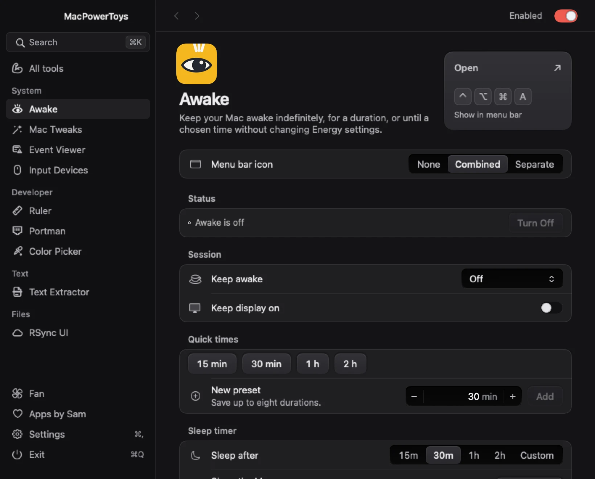

All nine tools.
Install in one line.
Homebrew
brew install --cask samhqapp/tap/macpowertoysOr download
Download MacPowerToys.dmgDetails